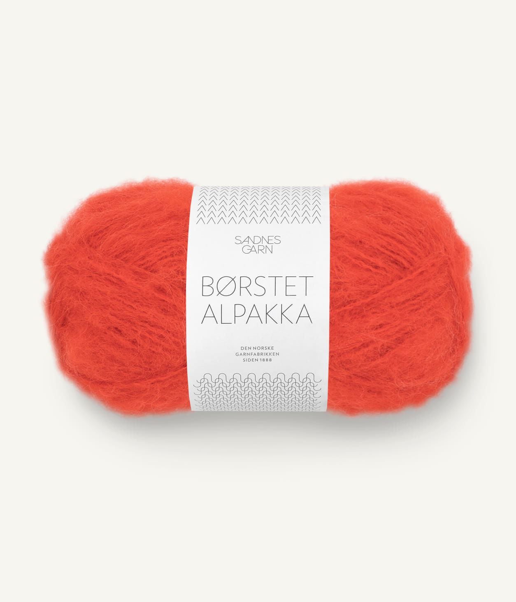
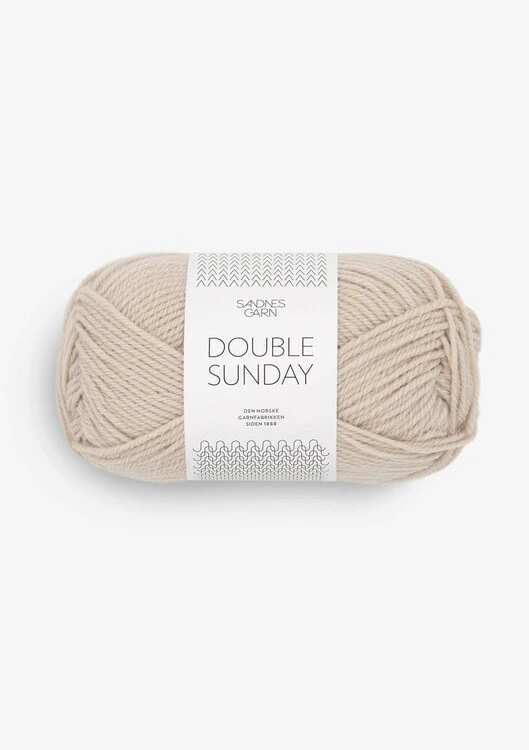
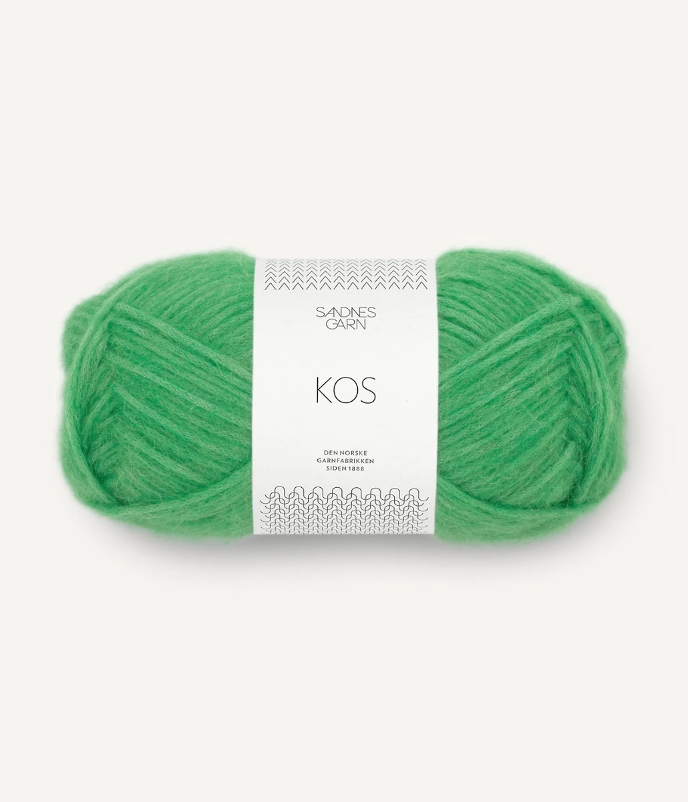
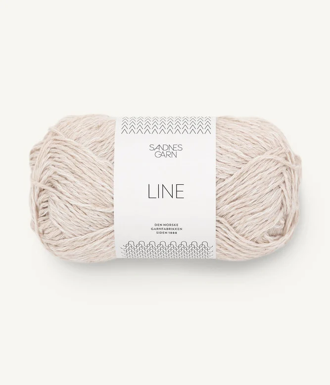
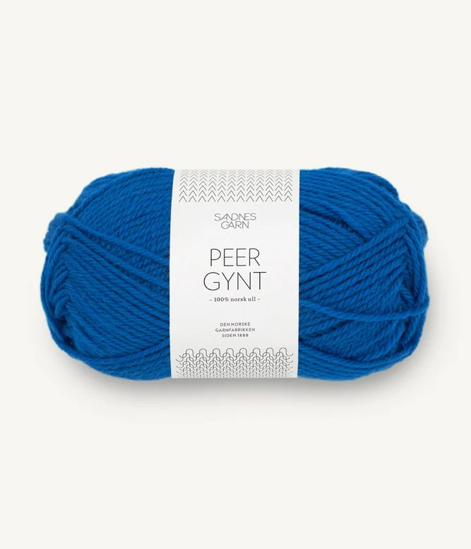

Børstet alpakka - Sandnes Garn
Garnet inneholder 96% børstet alpakka og 4% nylon.Strikkefasthet: 16-12 masker på pinne nr. 5-7 = 10 cm.
Løpelengde pr. nøste (50 gr) = ca 110 meter.
Råvaren til denne kvaliteten kommer fra Peru.
Finnes i fargene :
3819 - Spicy orange
6046 - Jolly blue
4033 - Fersken blomst

Double sunday - Sandnes Garn
Garnet inneholder 100% merinoull.Strikkefasthet: 20 masker = 10cm
Løpelengde pr. nøste (50 gr) = ca. 108 meter
Råvaren til denne kvaliteten kommer fra Australia.
Finnes i fargene:
1042 - Marsipan
8236 - Statement green
9825 - Sunny lime

Kos - Sandnes Garn
Garnet inneholder 62% baby alpakka, 9% ull og 29% nylon.Strikkefasthet: 22 masker på pinne nr. 3 1/2 = 10 cm.
Løpelengde pr. nøste (50 gr) = ca 150 meter.
Råvaren til denne kvaliteten kommer fra Peru.
Finnes i fargene:
8225 Lys jelly bean green
7213 Blå turkis
4333 Villrose

Line - Sandnes Garn
Garnet inneholder 53% bomull, 33% viscose og 14% lin.Strikkefasthet: 20 masker på pinne nr. 4 = 10 cm.
Løpelengde pr. nøste (50 gr) = ca 110 meter.
Råvaren til denne kvaliteten kommer fra India.
FInnes i fargene:
1015 Kitt
6032 Blå hortensia
4234 Terrakotta

Peer Gynt - Sandnes Garn
Garnet inneholder 100% norsk ull.Strikkefasthet: 22 masker på pinne nr. 3 1/2 - 4 = 10 cm.
Løpelengde pr. nøste (50 gr) = ca 91 meter.
Finnes i fargene:
6046 Jolly blue
6072 Blågrå Melert
4626 Shocking pink